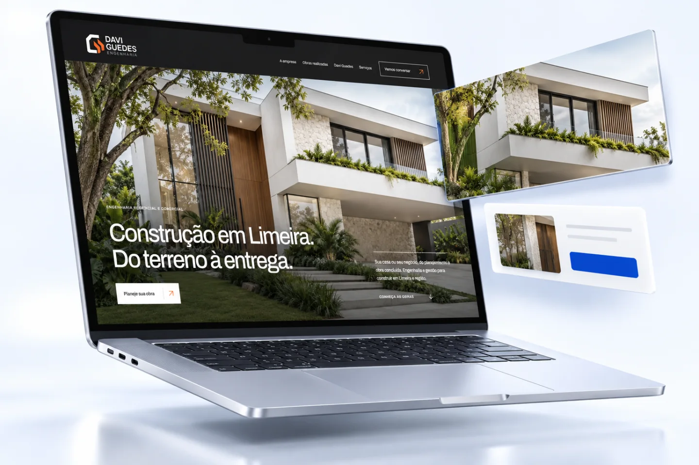
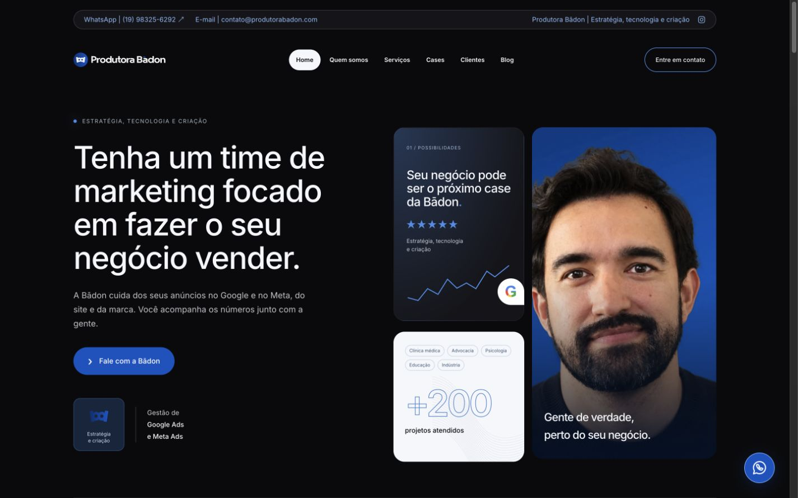

Desempenho
O site abre e responde com agilidade.
Máximo da escalaCriamos sites profissionais que mostram o valor do seu negócio e facilitam o caminho até o contato. Estratégia, design e desenvolvimento trabalhando juntos para transformar visitas em oportunidades.
Quero planejar meu siteVeja nossos projetosDe Limeira, SP, para empresas que querem ir além.

Antes de enviar uma mensagem, o cliente quer entender quem você é, o que faz e por que deveria confiar na sua empresa. Um site bem construído organiza essas respostas.
Na Bādon, cada página tem um papel: apresentar, esclarecer, mostrar o seu trabalho e conduzir ao próximo passo. Mais do que estar na internet, é ter um endereço que trabalha junto com o seu comercial.
Entenda o que vamos construirDesenvolvemos em código para conectar a apresentação da sua marca às funcionalidades de que você precisa. O projeto começa no conteúdo e no design; depois, ganha forma numa experiência rápida, responsiva e fácil de usar.
HTML, CSS e JavaScript compõem a interface. Quando o site precisa de gestão de conteúdo, formulários ou integrações, definimos também os recursos de servidor e administração.
Da ideia à experiência
O que seu cliente precisa entender.
Como a sua marca se apresenta.
Como tudo funciona, em cada tela.
Tecnologia escolhida para o projeto, com manutenção e evolução planejadas.
Carregar sem demora, facilitar a navegação e ajudar seu negócio a ser encontrado. Usamos o PageSpeed para identificar o que pode melhorar na experiência.
O PageSpeed avalia cada área em uma escala de até 100. Esses diagnósticos orientam os ajustes; os testes com pessoas completam a revisão.
Exemplo visual da nota máxima da escala. Os números abaixo não são resultados medidos dos nossos sites nem uma garantia de entrega.
O site abre e responde com agilidade.
Máximo da escalaMais facilidade para ler, navegar e interagir.
Máximo da escalaCuidado com a qualidade técnica da página.
Máximo da escalaUma base organizada para os buscadores.
Máximo da escalaAs notas reais variam conforme a página, o dispositivo e as condições do teste. Uma avaliação automática não garante acessibilidade completa, vendas ou posição no Google.
Uma entrega conecta decisões que não deveriam ficar separadas. Da primeira conversa à revisão antes de publicar.
Vamos conversar sobre o projetoQuantidade de páginas, integrações, painel e acompanhamento definidos na proposta.
Entendemos seu público, os serviços e o objetivo do site. Organizamos as páginas, o menu e os caminhos para que o visitante saiba onde está e o que fazer depois.
Tipografia, cores, imagens e composição pensadas como um conjunto. O layout valoriza o seu negócio e torna a informação fácil de encontrar.
Transformamos a proposta em páginas funcionais. O projeto pode incluir formulários, WhatsApp, gestão de conteúdo e conexões com os sistemas da sua operação.
Trabalhamos a base que ajuda pessoas e buscadores a entender o site. Revisamos imagens, títulos, links e carregamento, com atenção à experiência de uso.
Precisa atualizar serviços, publicar conteúdos ou trocar imagens? Podemos entregar uma plataforma gerenciável, com campos organizados para a rotina da sua equipe.
Você acessa uma área restrita, altera o conteúdo e revisa antes de publicar. Os campos editáveis, as permissões e a orientação de uso são definidos para o seu projeto.
Painel e funcionalidades incluídos quando previstos na proposta.
Um conteúdo claro, com a identidade do seu negócio.
Vamos conversarExemplo interativo. As alterações ficam só nesta tela e não são salvas.

O site da própria Bādon nas duas telas.
Design responsivo é mais do que diminuir uma página. É reorganizar textos, imagens e navegação para quem usa o celular, o tablet ou o computador.
Botões fáceis de alcançar, conteúdo legível e carregamento cuidado ajudam o visitante a continuar. A atenção à sua marca permanece, mesmo quando a tela muda.
Explore os sites que criamosUm site precisa explicar bem o que sua empresa oferece. Organizamos as páginas de serviços, os títulos e os links para que cada assunto tenha contexto — para seu cliente e para os mecanismos de busca.
A otimização SEO também passa por URLs compreensíveis, imagens bem descritas, versão mobile, sitemap e dados estruturados quando aplicáveis. O Search Console ajuda a acompanhar a descoberta e a indexação das páginas.
Essa base favorece a compreensão do conteúdo, inclusive por ferramentas de busca com IA. Posição no Google e citações por IA não são garantidas.
suaempresa.com.br / seu-servico
Uma descrição útil para quem está procurando o que sua empresa faz. Conteúdo próprio e um caminho claro até o contato.
Ilustração de estrutura, não um resultado real de busca.
Google Analytics ajuda a acompanhar como as pessoas chegam e interagem. Definimos os eventos relevantes para o seu negócio, em vez de olhar apenas o total de visitas.
Busca, campanha, redes sociais ou acesso direto.
Páginas e conteúdos que recebem atenção.
Cliques no WhatsApp ou formulários enviados, quando configurados.
A configuração de medição é combinada no projeto, com consentimento quando necessário e sem enviar dados pessoais em eventos. Um clique no WhatsApp não comprova uma conversa ou uma venda.
Conheça os eventos principais do Google Analytics ↗Definimos o formato a partir do objetivo, não de um pacote que tenta servir para todo mundo.
Apresenta a empresa, os serviços e os projetos. Um endereço próprio para construir confiança e facilitar novos contatos.
Concentra uma campanha ou serviço numa jornada objetiva, com a próxima ação bem definida.
Explica uma oferta, apresenta materiais, responde dúvidas e conecta o visitante à contratação ou inscrição.
Uma boa entrega começa com boas decisões. Nosso processo aproxima o que sua empresa precisa da experiência que seu cliente vai encontrar.
Conte o que você tem em menteNegócio, público, objetivos e materiais. Alinhamos escopo, páginas e responsabilidades.
Conteúdo, estrutura e direção visual. Você participa da revisão antes do desenvolvimento.
Implementação, navegação, integrações e experiência em diferentes telas.
Revisão final, domínio, hospedagem e acessos. Alinhamos o uso e a continuidade.
Sites e páginas que criamos para negócios diferentes. Clique em um projeto para navegar pela prévia aqui mesmo, sem sair desta página.
CLP Fácil e Juliana carregam conteúdo dos sites externos ao abrir, sujeito aos serviços e cookies próprios deles. Davi Guedes é uma demonstração interativa local.
Site institucional
Presença digital para uma empresa de engenharia em Limeira, com serviços, acervo de obras e a apresentação de quem acompanha cada construção.
Página de vendas
Uma apresentação que aproxima o universo da automação de quem quer aprender. Professor, conteúdo e oferta organizados numa jornada de inscrição.
Produto digital · Birra Sob Controle
Design acolhedor e conteúdo que parte das dúvidas do público para apresentar o produto, a especialista e os materiais.
Use as setas ou deslize para conhecer os outros projetos.
Depende do próximo passo que você quer facilitar. Um site institucional apresenta a empresa e seus serviços. Uma landing page concentra uma campanha. Uma página de vendas explica uma oferta com mais profundidade. Na conversa inicial, definimos o formato.
Sim, podemos entregar uma plataforma gerenciável com campos para os conteúdos que sua equipe precisa atualizar. Definimos na proposta o que será editável, os perfis de acesso e as orientações de uso. Alterações de layout e novas funcionalidades são avaliadas à parte.
O foco desta proposta é desenvolvimento em código, com tecnologias escolhidas para cada projeto. Podemos integrar um gerenciador de conteúdo para facilitar a operação, sem depender do WordPress. A tecnologia é um meio para construir a experiência de que sua empresa precisa.
O design responsivo adapta a composição a diferentes telas. Revisamos a leitura, os menus, os botões, as imagens e os formulários previstos para que o visitante consiga navegar e entrar em contato também no celular.
A base de SEO técnico faz parte do desenvolvimento descrito nesta página. Configuração de Analytics, Search Console e eventos é alinhada no escopo, com os acessos e as escolhas de privacidade necessários. Produção contínua de conteúdo e campanhas são serviços separados.
Não. Trabalhamos a qualidade técnica e o conteúdo, mas uma nota isolada não garante posicionamento nem vendas. Medimos o cenário real, corrigimos o que está ao alcance do projeto e explicamos os fatores externos, como hospedagem, conexão e ferramentas integradas.
Páginas, funcionalidades, conteúdos e integrações definem o investimento e o cronograma. Depois de entender seu projeto, apresentamos uma proposta com entregas, etapas e responsabilidades. Assim você decide sabendo o que está contratando.
Podemos orientar a contratação ou avaliar a estrutura existente. Custos de fornecedores, suporte contínuo e atualizações ficam definidos na proposta. Também alinhamos quem cuida dos acessos, backups e manutenção depois da publicação.
Sim. Primeiro avaliamos o conteúdo, as páginas e os caminhos que já existem. No planejamento, consideramos o que vale manter e, quando endereços mudam, os redirecionamentos necessários. O objetivo é evoluir a experiência com uma migração planejada.
Conte o que você faz, o que precisa comunicar e aonde quer chegar. A gente ajuda a transformar isso num site com direção.
Conversar com a BādonUma conversa para entender o projeto. Depois, uma proposta com as entregas claras.